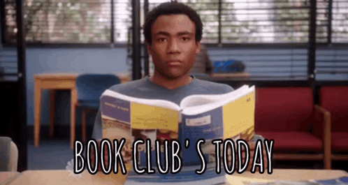

Resenhas do momento
Indicações, surtos e favoritismos completamente imparciais ( será?)
Recomendações de livros, opiniões fortes com pouca evidência e um índice de “me marcou” totalmente questionável.
Antigamente, nos tempos do “lá vai bolinhas” (falo como se eu fosse um fóssil jurássico), eu era uma leitora assídua. Lia com afinco e com aquele tipo de empolgação perigosa: a lista de livros só crescia e eu achava isso um ótimo sinal de estabilidade emocional.
Inclusive, eu me meti em vários esquemas de pirâmide literária. Sabe aquele livro que parece inocente e inofensivo, mas quando você vê… tem mais 7 continuações te olhando com cara de “você vai comprar, sim”? Então. Eu caí bonito — principalmente em aventura e fantasia. Rangers: A Ordem dos Arqueiros, estou falando de você. 12 livros. E eu nem reclamo muito, porque eu amei ler cada um.
Hoje em dia eu tô meio caidinha nas leituras, confesso. Mas pretendo voltar com uma meta honesta (honesta porque eu sei que se eu subir demais, eu volto humilhada e fingindo que nunca falei nisso). Tenho até uns títulos começados pela metade que eu quero retomar… e recentemente eu fui numa livraria e trouxe uns livros bem interessantes.
Querem saber quais são?
Fiquem de olho aqui, porque em breve eu vou fazer umas resenhas.